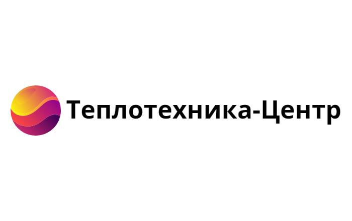
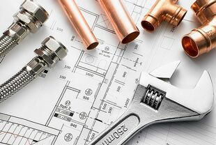

Что такое котельная?
Коте́льная — здание или помещение, в котором расположен комплекс устройств для выработки пара или горячей воды. Котельные установки бывают отопительные, отопительно-производственные и производственные.
Котельные соединяются с потребителями при помощи теплотрассы или паропроводов. Основным устройством котельной является паровой, жаротрубный и/или водогрейный котлы. Котельные используются при централизованном тепло- и пароснабжении или при местном снабжении, если эта котельная локального значения (в пределах частного дома, квартала).
ЭТАПЫ РАБОТЫ
-

1. Проектированиe
В компании «Теплотехника-Центр» есть подразделение, которое занимается проектированием котельных. Команда обладает огромным опытом в своей сфере и постоянно его обогащает, проходя обучения и выполняя проектирование сложных объектов.
Наша команда эффективно выполнит любые работы по проектированию котельных для производственных предприятий, муниципальных и государственных заказчиков, а также потребностей частного сектора.
-
.jpg)
2. Монтаж
Монтаж котельных основывается на комплектации главного и вспомогательного оборудования, обеспечивающего эффективную и безопасную работу котлов после их установки. Будет ли организовано строительство помещения с нуля или произведена реконструкция старого здания, первоначально необходимо ознакомиться с нормативной документацией, определяющей правильное введение в строй оборудования и его дальнейшее использование.
-
.jpg)
3. Обслуживание
Мы обслуживаем котельные любой сложности, а также производим ремонт всех типов оборудования и инженерных систем как в котельных, построенных нами, так и другими компаниями.
Наша команда обладает широкими навыками решения нестандартных задач. Мы знаем, какие работы и когда необходимо проводить для долгосрочной и бесперебойной работы вашего оборудования.
Примеры работы